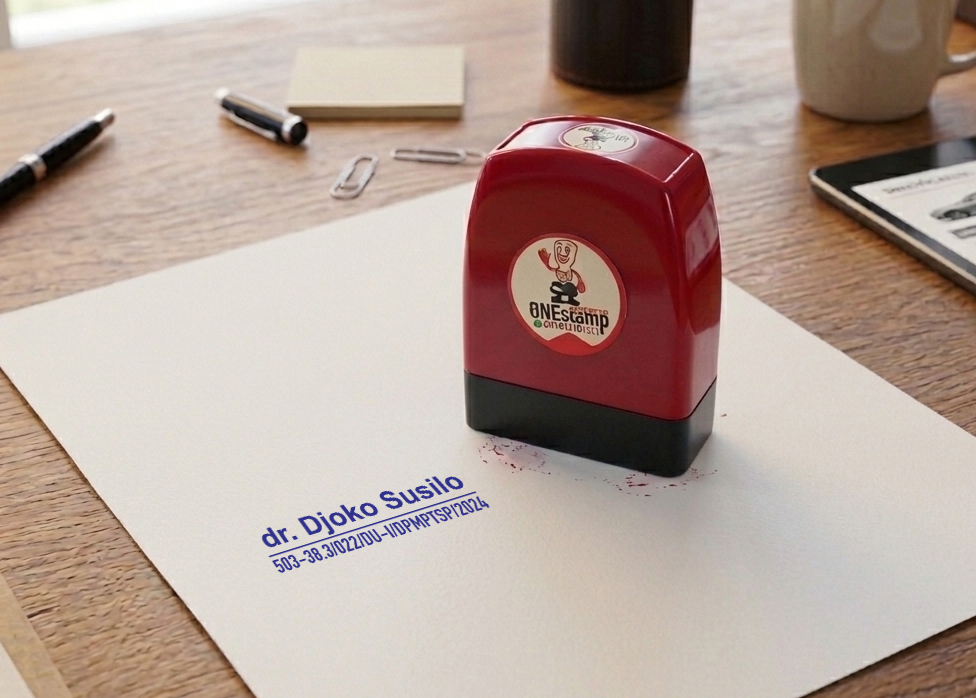
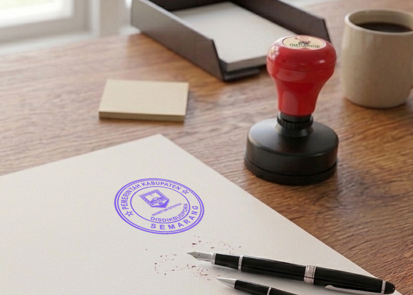

Produk Stempel

Stempel Warna Flash
Stempel modern tanpa bantalan tinta dengan hasil tajam.

Stempel Nama
Cocok untuk administrasi kantor dan usaha.

Stempel Instansi / Perusahaan
Desain stempel dengan logo perusahaan Atau Instansi Pemerintahan